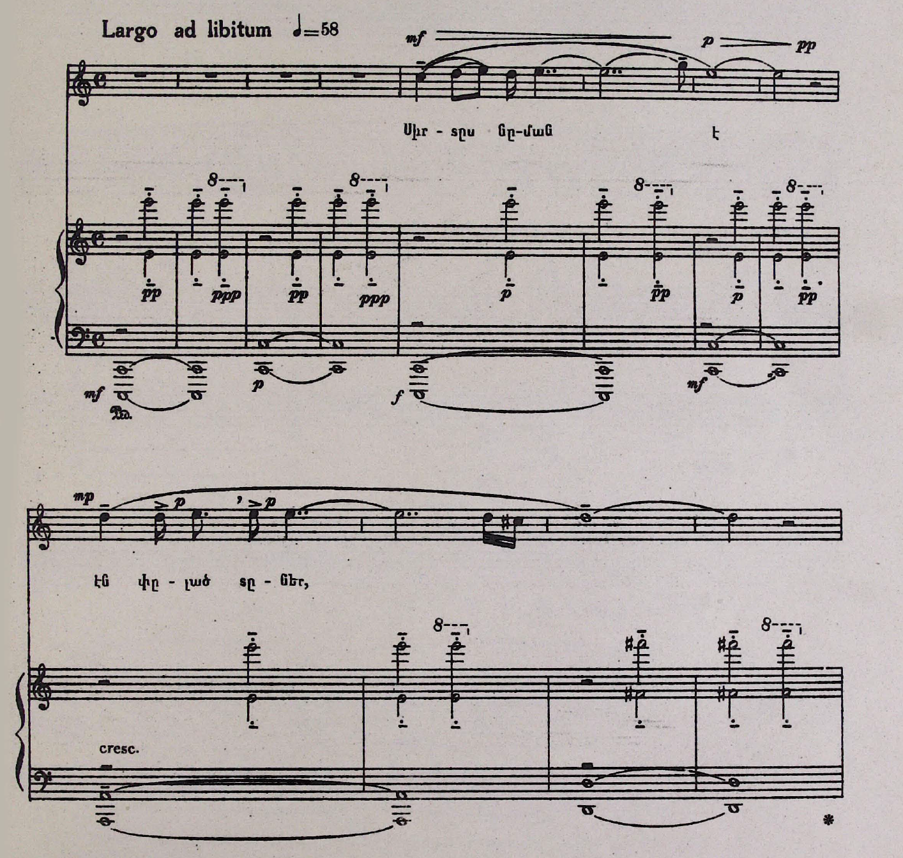
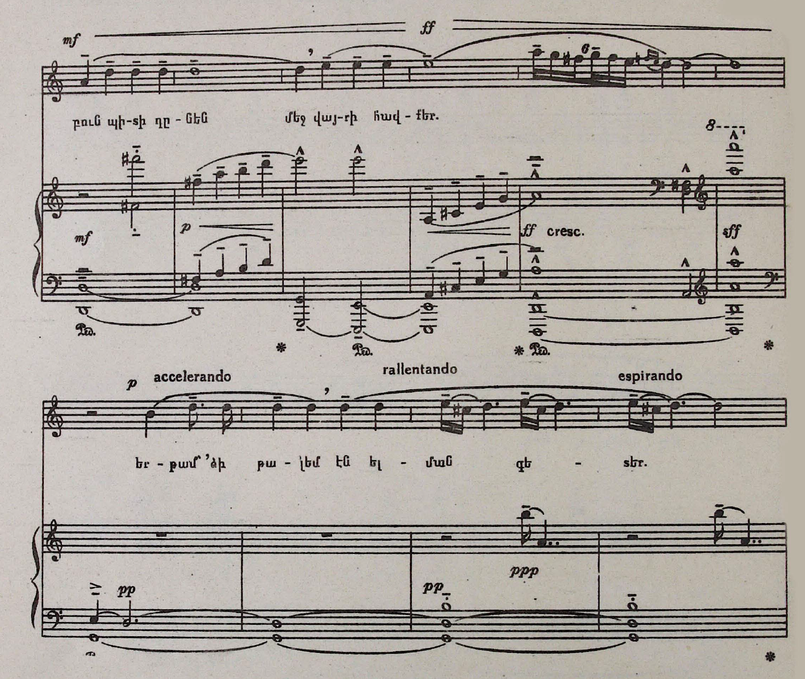
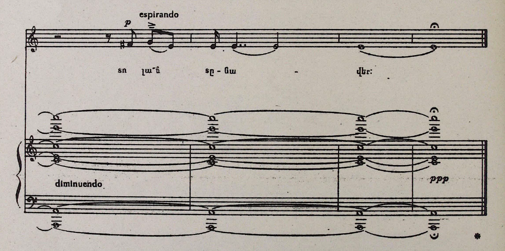
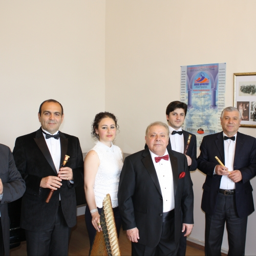
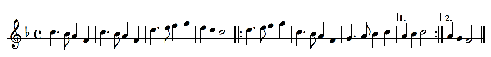

**Armenian Identity**
What is Armenian Identity? Surely a specific answer exists, but I would argue that a specific answer is a wrong answer. I would believe that for any culture, what gives something a cultural identity isn't something as rigid as the composer being related to said culture, or being created in a specific place. I agree with the argument brought up by Tchilingirian, where it is the intent, thought, and message behind a cultural creation that establishes that connection [1]. This allows it to be flexible should it change over time, and allows for those who feel disconnected to their culture to become a part of it.**Armenian Music System**
**Traditional Instruments**
*Some audio samples use OGG files from Wikimedia/Wikipedia. If it does not work on your browser (e.g., Safari), try a different one (Firefox, Chrome).* Although these instruments are common in Armenian music, they are not exclusive.


Gomidas at work
http://www.komitas.am/eng/gallery/photos/photos1.htm



**Soviet Armenia**
Political and societal expression was heavily suppressed under Soviet rule. However, the emergence of folk ensembles was highly encouraged in order to generate trust from the dozens of ethnic groups residing in the USSR [6]. However, under the policy of *korenizatsiya* (indigenization), all cultural aspects had to adhere to the Soviet standard. In addition, Russian eventually became mandatory to learn, which attempted to wipe out lingual differences.
Modern Aram Merangulian Ensemble
https://en.armradio.am/2015/07/02/
**Modern Armenia**
After the dissolution of the USSR in 1991, Armenia re-adopted it's national anthem: "Մեր Հայրենիք" ("Mer Hayrenik" - Our Fatherland). It was originally adopted in 1918, but was short-lived as Armenia was annexed by the USSR in the early 1920s. The anthem was composed by Parsegh Ganatchian, a spiritual child to Gomidas. Ganatchian is a Lebanese-Armenian composer who found inspiration from the diatonic, tetrachordal music that was commonly found in hymns and Gomidas' music. The lyrics were written by Mikayel Nalbandian, and together the music and words give off a sense of pride and love for Armenia. Below is my melodic transcription of the piece. Note the prevalence of tetrachords, as well as the melodic line built around F major. The melody builds upwards before each cadence, and relaxes down to F major euphony, indicating a hopeful and spirited future for Armenia.
Music and lyrics (translated)

Adiss Harmandian
Album cover, *Live At The Gulbenkian Theatre*
Ծփում է Սեւանը, Կանչում է Սեւանը, Ծով ալիքների մէջ, Ժպտում է Սեւանը։ Ծաղիկնե՜ր, ծաղիկներ, Անթառամ ծաղիկներ, Դուք սիրոյ կարօտի Անմոռաց վկաներ։ Ծաղիկնե՜ր, ծաղիկներ, Անթառամ ծաղիկներ, Երազող ծաղիկներ Իմ սիրոյ ծաղիկներ։ Մեր սէրը երազ էր, Արթնացայ էլ չկար Ես շատ արտասուեցի Բայց աւաղ ճար չկար։ Ծաղիկնե՜ր, ծաղիկներ,… Ես լուռ փնտռում եմ քեզ, Փնտռում տենչում եմ քեզ, Ներիր ինձ սիրելիս, Որ դեռ սիրում եմ քեզ…։
Sevan is rippling,
Sevan is calling,
In the waves of the sea,
Sevan is smiling.
Flowers, flowers,
Eternal flowers,
You need love,
Witnesses who will never forget.
Flowers, flowers,
Eternal flowers,
Flowers that dream,
Flowers of my love.
Our love was a dream,
I woke up and it was gone,
I cried a lot
But alas, there was no remedy.
Flowers, flowers,…
I'm quietly searching for you,
Searching yearning for you,
Forgive me my love,
For that I still love you…

Armenian Maid, a 1919 song that fundraised Armenian relief
https://arabkitsch.com/song-directory-2/239/armenian-maid/

From left to right: Serj, Shavo, Daron, John
Clemente Ruiz/Press
Adriaans, Rik. “Staging Sassoun: Memory and Music Video in Post-Soviet Armenia.” Social Analysis: The International Journal of Anthropology 60, no. 3 (2016): 17-35.
Apelian, Vahe. “Armenian Pop Music Spring.” V.H. Apelian’s Blog (blog). June 19, 2017. https://vhapelian.blogspot.com/search?q=music
Alajaji, Sylvia. “Exilic Becomings: Post-Genocide Armenian Music in Lebanon.” Ethnomusicology 57, no. 2 (2013): 236-260.
Alajaji, Sylvia. *Music and the Armenian Diaspora: Searching for Home in Exile*. Indiana University Press, 2015.
Kassabian, Anahid. “Improvising Diasporan Identities: Armenian Jazz.” In Ubiquitous Listening: Affect, Attention, and Distributed Subjectivity, 73–83. University of California Press, 2013.
Kerovpyan, Aram and Kerovpyan, Virginia. “Music with Aram and Virginia Kerovpyan: Musical modes and the Armenian Eight-Mode system.” Armenian Institute. June 24, 2020. Video, 43:25. https://www.youtube.com/watch?v=XEY-JVq3BBM
Michaelian, Andranik and Steiner, Hermelinde. “Traditional music and instruments of Armenia.” Face Music. March 2016. http://www.face-music.ch/instrum/armenia_instrum_en.html
Nercessian, Andy. “A Look at the Emergence of the Concept of National Culture in Armenia: The Former Soviet Folk Ensemble.” International Review of the Aesthetics and Sociology of Music 31, no. 1 (2000): 79-94.
Safi, Omid. “Music and Political Identity in the Armenian Diaspora.” Duke University. September 22, 2015. Video, 9:47. https://www.youtube.com/watch?v=TFKHzdLFDU8
System of a Down Wiki. https://soad.fandom.com/wiki/Arto_Tunçboyacıyan
Tchilingirian, Hratch. “What is ‘Armenian’ in Armenian Identity.” The Armenian Mirror-Spectator. February 2018. https://mirrorspectator.com/2018/02/22/armenian-armenian-identity/
Vagramian-Nishanian, Violet. “Gomidas Vartabed: Pioneer Of Armenian Folk Music.” The Choral Journal 22, no. 3 (1981): 5-8.